Deployment Overview
WatchGuard provides integration instructions to help our customers configure WatchGuard products to work with products created by other organizations. If you need more information or technical support about how to configure a third-party product, see the documentation and support resources for that product.
This integration guide describes how to set up Ecessa PowerLink with the WatchGuard Firebox. PowerLink provides automatic failover between WAN connections, including ISP links, with load balancing and traffic shaping.
Integration Summary
The hardware and software used in this guide include:
- WatchGuard FireboxV with Fireware v12.1
- Ecessa PowerLink PL150 v10.6.9
Topology
This integration demonstrates how to set up an Ecessa device with two WAN interfaces to handle multi-WAN failover for a FireboxV configured in Drop-In mode. If Ecessa is routing for a Firebox that requires inbound connections, the Firebox must be configured in drop-in mode so that the Ecessa device handles NAT. The first WAN link is configured with a static IP address and the other WAN link with DHCP. We also configured an inbound SSH connection to a Linux device we could use to test the integration.
Configure Ecessa
To configure Ecessa:
- Log in to the Ecessa web UI.
The default URL is https://192.168.50.1. The default user name is root and the default password is PWRLNK. - From the Basic Setup section, select WAN.
- Click Add New WAN.
The Base WAN Settings appear.
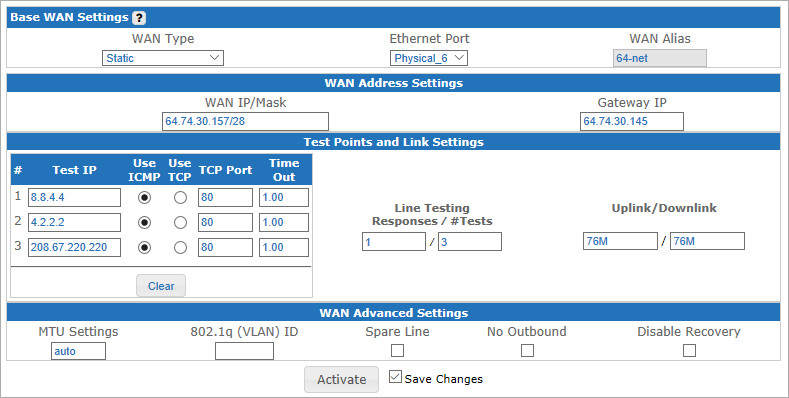
- From the WAN Type drop-down list, select Static.
- From the Ethernet Port drop-down list, select the physical port.
- In the WAN Alias field, type the interface alias.
- In the WAN Address Settings section, type the WAN IP/Mask in slash notation and the Gateway IP.
- Adjust the Test Points and Link Settings and WAN Advance Settings according to your network.
- Select the Save Changes check box.
- To apply the saved settings, click Activate.
- From the Basic Setup section, select WAN.
- Select Add New WAN.
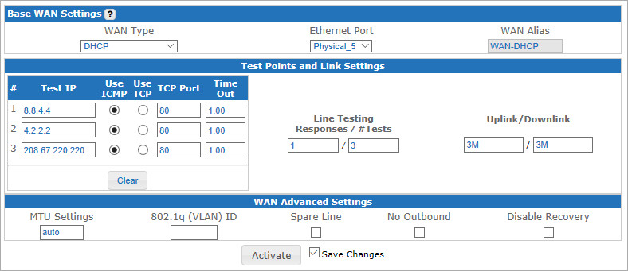
- From the WAN Type drop-down list, select DHCP.
- From the Ethernet Port drop-down list, select the physical port.
- In the WAN Alias text box, type the interface alias.
- Adjust the Test Points and Link Settings and WAN Advance Settings according to your network.
- Select the Save Changes check box.
- To apply the saved settings, click Activate.
- Select Basic Setup > LAN.
- To add a row, click Add a new LAN.
- In the LAN Alias text box, type the interface alias.
- In the LAN IP Address field, type the address in slash notation.
- From the Ethernet Port drop-down list, select the physical port.
- Select the Save Changes check box and click Activate.
- From the left side panel, select Routing/NAT > Port Forwarding.
The Port forwarding Configuration page appears. - Select the Add Forwarding Entry to add a new row.
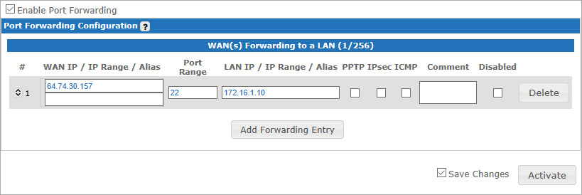
- In the WAN IP/IP Range/Alias, type the inbound connection public IP address.
- In the Port Range text box, type the inbound connection port(s).
- In the LAN IP/IP Range/Alias text box, type the internal private IP address.
- If required, select PTPP, IPSec, or ICMP.
- Select the Save Changes check box.
- To apply the saved settings, click Activate.
Configure Firebox for Ecessa
In this example, the Firebox is configured in Drop-In mode. Ecessa performs NAT from the public IP address to the private IP range configured on the Firebox. For Drop-In mode, the Firebox uses the same subnet on all interfaces.
To learn more about how to configure your Firebox in Drop-In mode, see Fireware Help.
- Log in to Fireware Web UI.
- Select Network > Interfaces.
- From the Configure Interfaces in drop-down list, select Drop-In Mode.
- Click Configure.
The IP Settings page appears. In Drop-In Mode all active Firebox interfaces are assigned the same IP address.
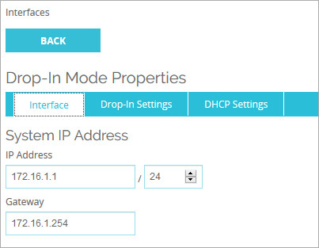
- Type the IP Address in slash notation and the Gateway IP address.
- Select the Drop-In Settings tab.
- In the Automatic Host Mapping section, verify the active interfaces are selected.
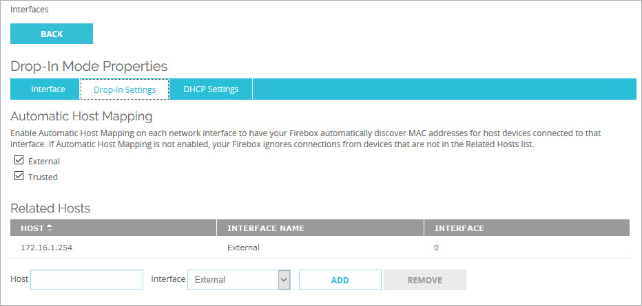
- Click Back.
- Verify the entries and click Save.
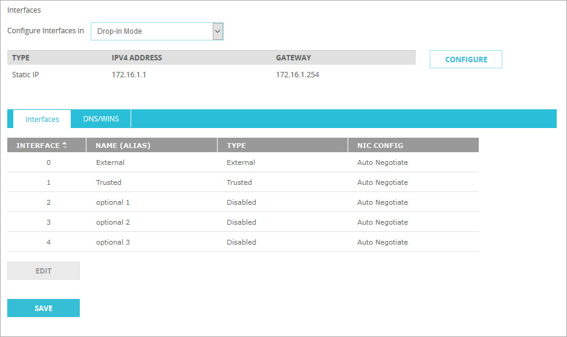
- Select Firewall > Firewall Policies.
- Click Add Policy.
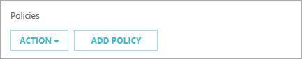
- In the Select a policy type section, from the Packet Filterdrop-down list, select SSH.
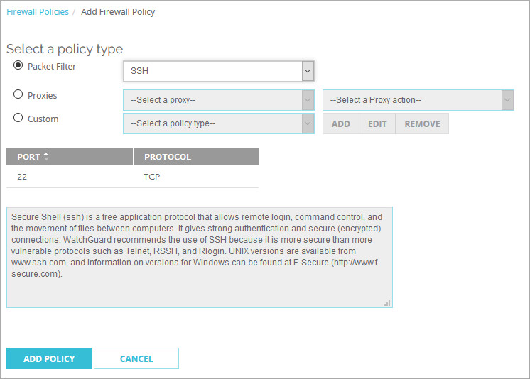
- Click Add Policy.
A page appears that shows the new policy properties.
- Type an appropriate Name for the policy.
- Remove any alias or IP address from the To and From fields of the policy.
- In the From field, select Add.
- For the Member type use the Alias drop-down list, and select Any-External.
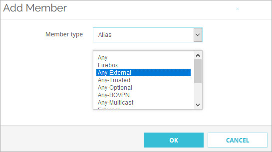
- Click OK.
- In the To field, select Add.
- From the Member type drop-down list, select Host IPv4 and type the internal private IP address.
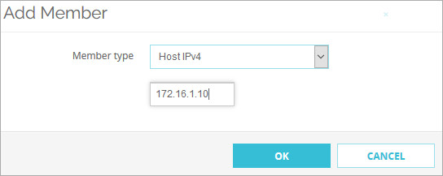
- Click OK.
- Verify the policy and click Save.
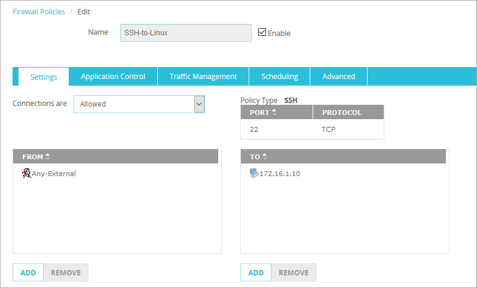
Test the Integration
You might need to flush the ARP cache or reboot some routers before you test this integration.
From a Windows computer that is external to the Ecessa device:
- Open the Windows command prompt.
- Type this command: telnet <public IPaddress> 22
- An SSH response shows the connection on port 22.